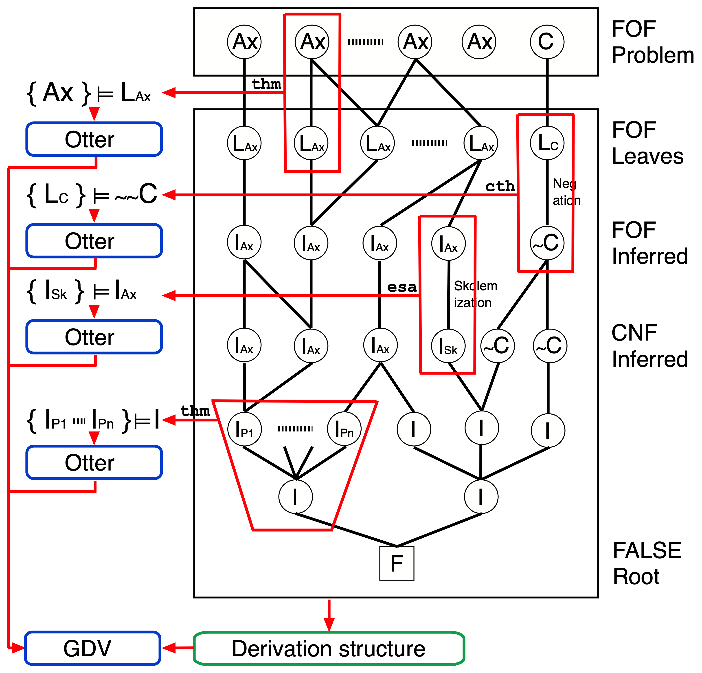

Verifying Derived Formulae

Logical Consequences
- Obligation to prove derived formula from its parents
- Include theory axioms as required
- Discharge using a trusted system
Relevant Logical Consequences
- Contradictory parents entail anything
- Obligation to show parents satisfiable
- Whoops, FOL is only semi-decidable
- Finite model generation
- Saturation generation
- Failed test for unsatisfiability
- Relevance not necessary in some refutation steps
Non-Logical Consequences
- Negated conjectures: Prove negated leaf from parent
- Skolemized: Prove parent from Skolemized form (incomplete)